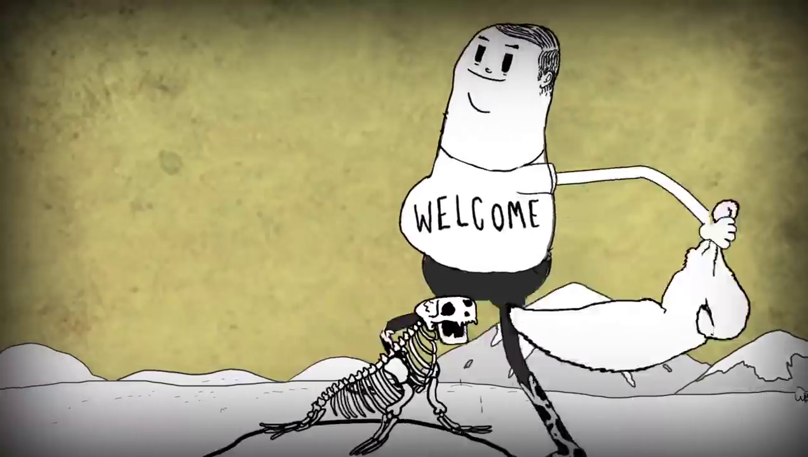

Homem caçador
Há uma sequência de cenas mostrando Man como um caçador. Sim. Durante muito tempo a caça foi importante para nós, humanos.
Antigamente não sabíamos cuidar de animais. Muitos eram selvagens. Por isso, o homem inventou a caça, que é retirar um animal selvagem da natureza para o consumo de sua carne, couro, penas, chifres e pelos.
Hoje em dia já sabemos que a caça pode extinguir os animais selvagens, inclusive os peixes do mar. Então, existem muitas empresas que empregam pessoas preocupadas em proteger os animais selvagens. Os governos também fazem a sua parte com leis que protegem os animais e proíbem sua caça.
Esse tipo de caçador que vemos no vídeo já não existe mais. Os poucos que existem caçam ou porque a caça faz parte de sua cultura ou por necessidade de sobrevivência.